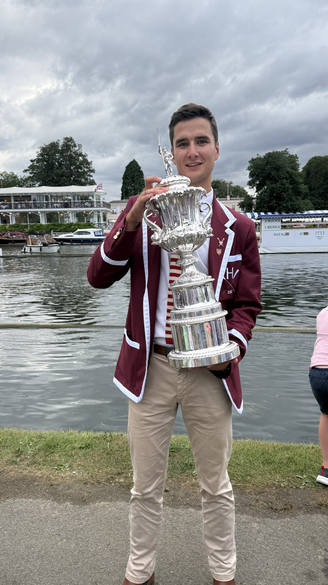
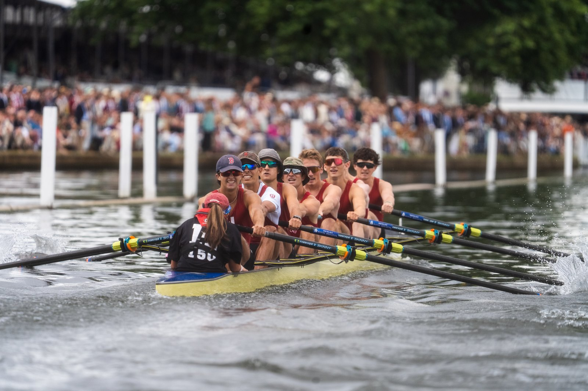
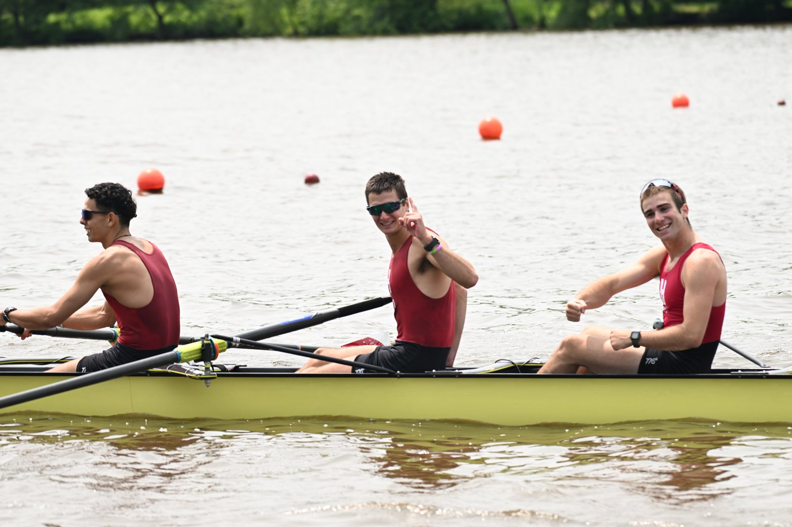

Rowing — Harvard Lightweight Crew




Overview
Outside of the classroom, I am a keen athlete, and am currently a member of the Harvard Men's Lightweight Rowing team. In my time at Harvard, my toughest but most rewarding moments have stemmed from the boathouse, and the 20+ hour weekly commitments have paid off with the results we have achieved.
Achievements
- Freshman year: rowed six seat in the first varsity boat as the crew posted an unofficial world's best time in the lightweight eight
- Freshman year: undefeated national champions
- Freshman year: won the Temple Challenge Cup at Henley Royal Regatta for the first time in the team's history
- Sophomore year: rowed six seat in the varsity boat as the crew became undefeated national champions for the third year in a row
What It's Taught Me
A race lasts six minutes and there are no do-overs once the boat leaves the start. That kind of pressure teaches you to execute cleanly the first time rather than lean on iteration mid-crisis, and to trust preparation over improvisation when it counts.
In an eight, one rower slightly out of time costs the whole boat speed, no matter how strong that individual is. It's a constant lesson in prioritising synchrony over individual output, and in recognising that local optimisation can hurt the system as a whole, which is something I've carried directly into how I approach team-based engineering projects.
Rowing has also taught me to sit with delayed gratification. Winning the Temple Challenge Cup at Henley took years of 20+ hour weeks building toward a single result, with training data and coach feedback as our main metric for whether the work was paying off. That same discipline of staying consistent without constant validation, and trusting a long feedback loop is exactly what sustained technical work demands.
Finally, there's no hiding in a boat. Teammates feel low effort stroke by stroke, which has instilled a level of accountability and reliability that I try to bring into every team I'm part of.